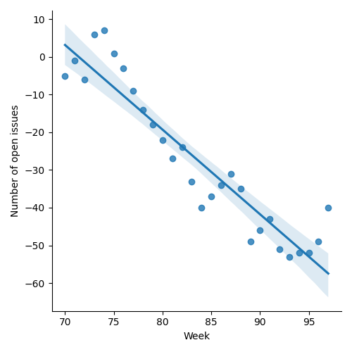
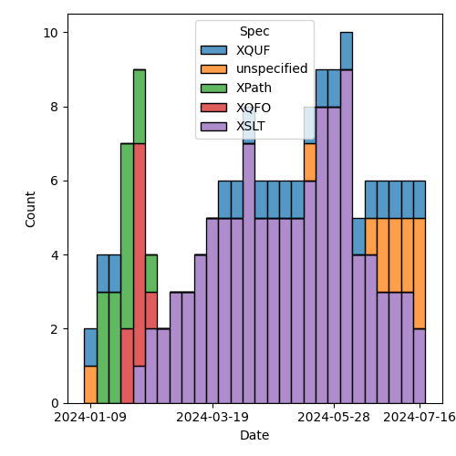
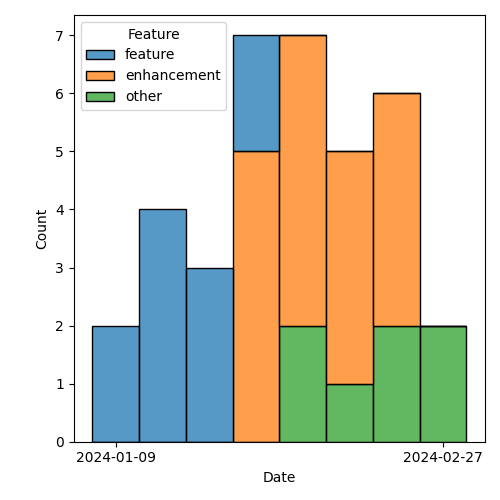

QT4 CG Meeting 087 Minutes 2024-07-23
Meeting index / QT4CG.org / Dashboard / GH Issues / GH Pull Requests
Table of Contents
Draft Minutes
Summary of new and continuing actions [0/4]
[ ]QT4CG-080-05: NW to add absolute property to the parse-uri output[ ]QT4CG-080-07: NW to update the build instructions in the README[ ]QT4CG-082-02: DN to work with MK to come to agreement on the fn:ranks proposal[ ]QT4CG-087-01: DN to update PR #1228 to reflect MK’s compromise and update the vulnerabilities
1. Administrivia
1.1. Roll call [11/12]
Regrets: JLO
[X]Reece Dunn (RD)[X]Sasha Firsov (SF)[X]Christian Grün (CG)[X]Joel Kalvesmaki (JK)[X]Michael Kay (MK)[ ]Juri Leino (JLO)[X]John Lumley (JWL)[X]Dimitre Novatchev (DN)[X]Wendell Piez (WP)[X]Ed Porter (EP)[X]C. M. Sperberg-McQueen (MSM)[X]Norm Tovey-Walsh (NW). Scribe. Chair.
1.2. Accept the agenda
Proposal: Accept the agenda.
Accepted.
1.2.1. Status so far…
These charts have been adjusted so they reflect the preceding six months of work.

Figure 1: “Burn down” chart on open issues

Figure 2: Open issues by specification

Figure 3: Open issues by type
1.3. Approve minutes of the previous meeting
Proposal: Accept the minutes of the previous meeting.
Accepted.
1.4. Next meeting
This next meeting is planned for 3 September 2024. We’re on recess until then.
1.5. Review of open action items [0/3]
(Items marked [X] are believed to have been closed via email before this agenda was posted.)
[ ]QT4CG-080-05: NW to add absolute property to the parse-uri output[ ]QT4CG-080-07: NW to update the build instructions in the README[ ]QT4CG-082-02: DN to work with MK to come to agreement on the fn:ranks proposal
1.6. Review of open pull requests and issues
1.6.1. Blocked
1.6.2. Merge without discussion
The following PRs are editorial, small, or otherwise appeared to be uncontroversial when the agenda was prepared. The chairs propose that these can be merged without discussion. If you think discussion is necessary, please say so.
- PR #1332: 1317 Fix the record subtyping rules
- PR #1328: 1326 wording improvements for concat and string-join
Proposal: merge without discussion.
Accepted.
1.6.3. Substantive PRs
The following substantive PRs were open when this agenda was prepared.
- PR #1333: 1329 Add content option to load-xquery-module
- PR #1331: 1324 Introduce markup for executable specs
- PR #1327: 1309 bare brace ambiguities
- PR #1296: 982 Rewrite of scan-left and scan-right
- PR #1283: 77b: Update expressions
- PR #1263: 1224 Add xsl:accumulator-rule/@priority attribute
- PR #1228: – Adding the BLAKE3 hashing algorithm to fn:hash
- PR #1209: 1183 Add transient mode and the transient{} expression
- PR #1185: 1179 array:values, map:values → array:get, map:get
- PR #832: 77 Lookup returning path selection
2. Technical Agenda
2.1. PR #1263: 1224 Add xsl:accumulator-rule/@priority attribute
See PR #1263
Please review the technical discussion from last week. Several members requested a week to consider the proposal.
- JWL: I’m not sure priority is needed.
- WP: I agree.
- MK: Fine by me. I’ve needed it.
- RD: My understanding of the feature is that it only applies to the rules within a section under the accumulator element. Those are evaluated in document order, so you can just order them. You can use your editor to see the order.
Proposal: there isn’t consensus for this change. Close the PR without merging it.
Accepted.
- JWL: It might be useful to add a note that explains how you can already do this.
2.2. PR #1331: 1324 Introduce markup for executable specs
See PR #1331.
- MK: I was inspired by DN’s remarks last week that we have examples that don’t
compile.
- … We can go beyond that, we can execute the examples and see that they produce the correct results.
- MK: The visible effect is that if there is an executable equivalent (for
example,
fn:for-each), we get a “formal specification” section that includes an equivalent formulation of what the function does.- … I’ve tried to keep those minimal in their syntax so that we have a core
language that everything else can be built on top of.
- … For maps and arrays, I’ve added a set of primitives for maps and arrays to support this approach.
- … I’ve tried to keep those minimal in their syntax so that we have a core
language that everything else can be built on top of.
MK switches to the Data Model
- MK: For sequences, maps, and arrays, there are a set of primitive operations
in the Data Model. Everything else can be built on top of those primitives.
For maps and arrays, everything really is built on top of those.
- … That all works quite nicely.
- … Of course, we could debate what the primitives should be but I’ve tried to keep the set small.
MK switches back to Functions and Operators
- MK: The introduction has been edited and the description of the formal
specification has been added.
- … We’ll never get formal specs for things like format-number, they’re just too complicated.
- MK: All the map and array functions have formal specifications, and the operators on sequences do.
Things in the “formal specification” sections are checked for syntax errors and in some cases semantics as well.
- DN: Thank you, MK. This is a huge step forward. I was expecting to see an attribute or something.
- MK: Yes, let’s try to switch over to the markup.
MK shows some of the markup.
- MK: The new section is
fos:equivalent. Thestyleattribute indicates how it’s mapped: primitive, XPath expression, etc.- … There’s a stylesheet
generate-equivalence-tests.xslthat generates an XQuery test file that checks the syntax and possibly semantics of the equivalent expressions. - (MK walks through some more of the XQuery)
- … There’s a stylesheet
- DN: It’s good to have formal definitions. I was expecting to see the phrase “executable specification” somewhere. It would be good to have it in the text of the spec as well as the markup.
- MK: The presence of the formal specification section indicates that it’s executable, otherwise it’s absent.
- JWL: MK, this is building an interpreter.
- MK: Yes.
- JWL: I’ll see if I can carry on with my iXML grammars in this vein.
- MK: It would be really nice to do something about the language constructs as well, but that’s work for another day.
- MSM: Since MK expressed some hesitence about the name “formal specification”
some of us have been wondering (in the Zoom chat) if “executable description”
or “equivalent expression” would be better.
- … I like RD’s suggestion of “reference implementation”
- MK: I like that too.
- RD: Could these be extracted separately as well as in the XQuery implementation?
- … So that implementors can take them and use them if they want to?
- MK: I’m sure it could be done!
- DN: Everything that we can specify this way we should do so. When we have an
exectuable specification, it’s a test oracle. We should mention this in the
description of the “formal specification” session.
- … I think that would simplify the life of implementors and users who want to understand their own examples.
- JWL: I’m not sure it goes as far as an oracle, because we have to consider the error cases. The reference implementation doesn’t say what it’s errors are.
- MK: Yes. I’ve tagged the reference implementations with an attribute to indicate whether or not it covers error behavior.
- JWL: Can the errors be in the implementation sections as well?
- MK: Yes, but many are pretty primitive and don’t have a lot of errors.
- WP: I like that direction, the other stress point becomes the testing. I’d like to echo what DN said, I think this is great work.
Proposal: merge this PR.
Accepted.
2.3. PR #1327: 1309 bare brace ambiguities
See PR #1327.
MK introduces the PR.
- MK: We hit a number of issues that could be traced back to the introduction of
bare brace syntax for map constructors.
- … I decided to experiment with restricting the place where you can use a bare brace map constructor.
MK reviews the grammar changes.
- MK: The result of this change is that you can only use them at a fairly high
level. They aren’t available in
ExprSingleany more.- … You can use them in an argument to a function, in a sequence
concatenation, in a let binding after
:=, on the right hand side of a:in map value expression, in a square array constructor. Basically, the JSON-style syntax for constructing maps and arrays. - … But after the
returnkeyword, for example, you have to usemap { }. - … So you can use it in the “important” contexts but not everywhere.
- … The rule of thumb is the word
mapis needed if it follows a keyword.
- … You can use them in an argument to a function, in a sequence
concatenation, in a let binding after
- MSM: Where have we not replaced
ExprSinglewithStandaloneExpression? - MK: After “then” and “else”, after “satisfies”, after “in”, after “return”.
- … That’s the one that’ll get people most often, after “return”
- MSM: It looks like the rule of thumb holds pretty well. If what precedes it is an alphabetic keyword, you need the word “map”.
- MK: After some operators as well, like “+” but you wouldn’t want it there.
- RD: This seems like a reasonable, pragmatic compromise.
- CG: I think you can always use additional parenthesis instead of the map keyword.
- MK: Yes.
Proposal: accept this PR.
Accepted.
2.4. PR #1333: 1329 Add content option to load-xquery-module
See PR #1333.
MK introduces the PR.
- MK: This basically lets you load an XQuery module from a string.
- … it extends the options available to
load-xquery-moduleso you can use a string.
- … it extends the options available to
Proposal: accept this PR.
Accepted.
2.5. PR #1228: – Adding the BLAKE3 hashing algorithm to fn:hash
See PR #1228.
- MK describes his compromise proposal.
- DN: I fully support this. I think this supports the goal of the PR.
- … I have another remark in the current specification. It warns about vulnerabilities in only two of the four algorithms. I’d like that corrected.
ACTION QT4CG-087-01: DN to update PR #1228 to reflect MK’s compromise and update the vulnerabilities
3. Any other business
- JWL: When we come back, should we have a review of where we are?
- NW: Yep.